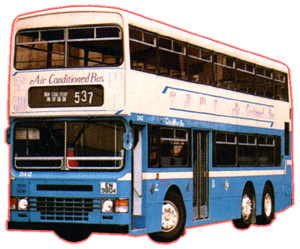
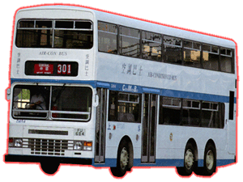
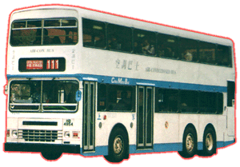
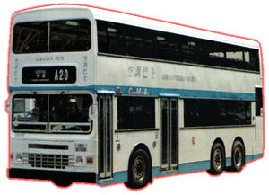

Dennis - Condor A/C 11 Metre 
 |
 |
 |
 |
| 型號 Model 引擎 Engine
容積 Engine Capacity
波箱 Gearbox 車身 Body Build 空調系統 A/C 體積 Volume 載客量 Passenger
登記年份 Year |
: DA (1 - 92) : Cummins LTA10 (282 bhp) Cummins LTA10 (252 bhp) Cummins M11-280E Euro II (280 bhp) : 10 Litres (LTA10) 10.82 Litres (M11) : Voith DIWA863 (3-Speed Automatic) : Duple Metsec : Nippondenso : 11035L X 2500W X 4369H(mm) : (DA 1 - 56) U66 L41 S32 (DA 57 - 82) U62 L41 S32 (DA 83 - 92) U51 L39 S31 : 1990 - Now! |
正當九記那邊仍在測試空調巴士性能之際，中巴已經亳不猶豫，不作試驗一口氣便購入 12 部空調巴士，這首次購入的丹尼士秃鷹十一米空調巴士 (Dennis Condor A/C 11m) ，於 1990年年中投入服務，為何這麼急切買車？就是因為對抗城巴的入侵，開辦空調巴士路線才這樣做。這批新車由新款主引擎 - 康明斯 (Cummins) LTA10，直接帶動日本電裝 (Nippondenso) 空調系統，加上 Voith DIWA 863 波箱，將巴士性能帶到一個新境界，那種動力澎湃感覺，對於巴士來說實在前所未有﹔而且中巴最初將巴士設計構思爲夏季有冷氣，冬季可以變回一部非空調巴士所用，所以當時巴士車窗都裝有上了鎖的小氣窗，但因為種種原因關係，計劃被否決，巴士只能以全空調四季行走。但是直到今時今日，竟然才有一些組織走出來大大聲表示要求空調巴士在冬季時關冷氣及開窗，節約能源，唉…爲何這些人不早點走出來，令中巴這個計劃死得不明不白，假如這計劃成功，中巴專營權會否落空，誰人知？這就叫做時也命也，前人大叫開冷氣，今人卻呼關冷氣，香港就是這樣一個奇怪地方，每天都有奇怪事奇怪人，何其悲哀？！
到後來由於空調巴士路線增加和某些路線都加入空調巴士混合行走服務方式，中巴於 1991 及 1993 再訂購多 24 及 20 部新空調巴士，以應需求。其實空調巴士服務已續漸成為標準，中巴再於 1996 和 1997 間年購入 36 部新巴士，其設計大至與前 56 部相若，分別在於車輪改闊，兩邊車窗已改為封閉式，改良式 Nippondenso 空調系統，這空調系統改善了車箱溫度能比較穩定，但是空調機所發出的聲響比以前嘈吵，好壞參半，而且最後十部新車中即 DA83 - DA92 有更多變動，除了上述變改之外，更改用了乎合歐盟環保 II 型引擎，第一次採用方角形的全密封一幅式車窗 (與九記及看齊)，車箱改為 2+2 座椅佈局，並首次 選用 Trend-Tex 獨立座椅，大大提高舒適度，對比其他幾間公司巴士有過之而無不級。
到 1998 年由新巴接手，新巴已對這些巴士作一些改動，及有數部己退役轉賣，其餘都健健康康地繼續行走。(後來的日子要到新主頁再交代吧！)